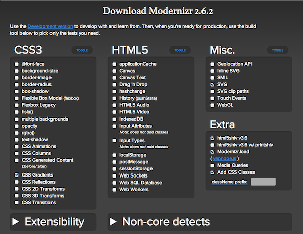

The Problem
We want to use modern features today
but they're not supported in every browser
Approaches
- IE Conditional Comments
- User Agent Sniffing
- Live & Let Die
I'm a web developer;
I'll blame IE!
Your
Argument
is Invalid
User Agent Sniffing
if ( navigator.userAgent.match(/Android 2\.[0-3]/) ) {
oopsNoInlineSVG();
oopsNoContentEditable();
// no need to run oopsNoCssGradients();
}
Did I Not
Just Show
You This Slide?
Live & Let Die
a.k.a. "ignoring older browsers"
Enter Modernizr
One of the web's most popular JavaScript libraries
With Modernizr
.no-inlinesvg .svg-wrapper {
background-image: url(fallback.png);
}
Without Modernizr
if ( navigator.userAgent.match( hugeListOfUAsThatDontSupportSVG ) ) {
$( 'div > .svg-wrapper' )
.css( { "background-image":
"url(fallback.png)" } );
}
Using Modernizr
index.html
<html class="no-js">
<head>
<title>Awesome Website</title>
<script src="modernizr.test.js"></script>
</head>
...
Pseudo-Modernizr
var docElement = document.documentElement;
docElement.className = docElement.className.replace(/(^|\s)no-js(\s|$)/, '$1$2') + ' js';
var div = document.createElement('div');
div.innerHTML = '<svg/>';
if (div.firstChild.namespaceURI == "http://www.w3.org/2000/svg") {
docElement.className += ' svg';
} else {
docElement.className += ' no-svg';
}
Afterwards...
index.html
<html class=" js svg">
<head>
<title>Awesome Website</title>
<script src="modernizr.svg.js"></script>
</head>
...
style.css
.inlinesvg svg {
display: block;
}
.no-inlinesvg .svg-wrapper, .no-js .svg-wrapper {
background: url(fallback.png) no-repeat;
}
There is no single Modernizr.js
<html lang="en" xml:lang="en" class=" js flexbox canvas canvastext webgl no-touch geolocation postmessage websqldatabase indexeddb hashchange history draganddrop websockets rgba hsla multiplebgs backgroundsize borderimage borderradius boxshadow textshadow opacity cssanimations csscolumns cssgradients cssreflections csstransforms csstransforms3d csstransitions fontface generatedcontent video audio localstorage sessionstorage webworkers applicationcache svg inlinesvg smil svgclippaths cufon-active cufon-ready">
Choices, Choices...

Polyfills
Modernizr.load()
Modernizr.load( {
test: Modernizr.geolocation,
nope: "no-geolocation.js"
} );
advanced Modernizr.load()
Modernizr.load([{
test : Modernizr.fontface && Modernizr.canvas && Modernizr.cssgradients,
nope : ['presentational-polyfill.js', 'presentational.css']
},
{
test : Modernizr.websockets && window.JSON,
nope : 'functional-polyfills.js',
both : [ 'app.js', 'extra.js' ],
complete : function () { myApp.init(); }
},
'post-analytics.js'
]);
Modernizr is not a Superhero
"The Undetectables"
- Datepicker, Colorpicker
- Font Rendering
- JS Event Oddities
position: fixed; on Mobile- The Full List